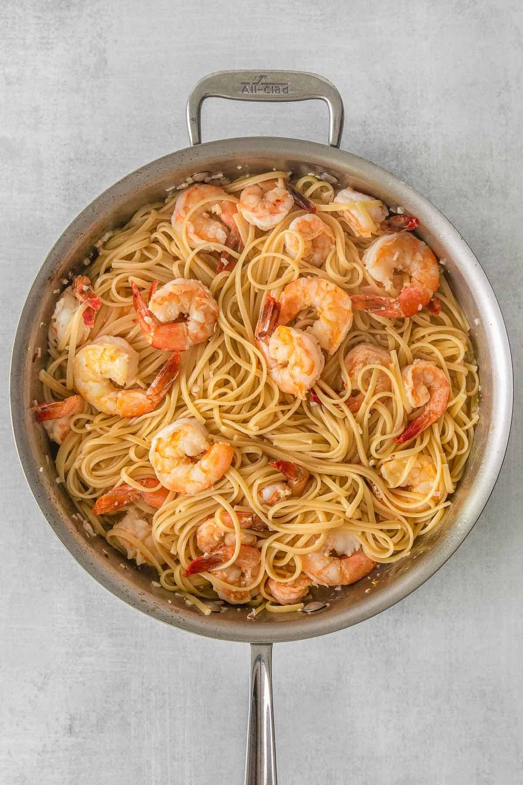

Shrimp Scampi

Description
Easy and restaurant quality. Eat juicy shrimp in a garlic and lemon butter sauce at home. Serve with toasted bread to soak up the sauce!
Ingredients
- 1 pound linguine
- 2 tablespoons olive oil
- 1 pound medium shrimp, peeled and deveined
- 3 tablespoons butter
- 4 cloves garlic
- 1/3 cup white wine
- Juice of one lemon
- 1/2 teaspoon salt
- 1/2 teaspoon red pepper flakes
- 2 tablespoons fresh parsely
Steps
- Bring a large pot of water to a boil, add a teaspoon of salt and cook pasta according to package instructions.
- Carefully remove 1/2 cup of the pasta water and save before draining
- Thoroughly pat the shrimp dry with a paper towel.
- In a large skillet, heat the oil over medium-high heat.
- Add the shrimp to the heated pan and saute for 2 minutes.
- Flip shrimp over and cook an additional minute.
- Add the butter and garlic to the pan, stir until butter has melted and garlic is fragrant.
- Add the wine, lemon juice, salt,and red pepper flakes and bring sauce to a low simmer.
- Add pasta into shrimp and sauce and stir to coat well.
- Garnish with parsely.